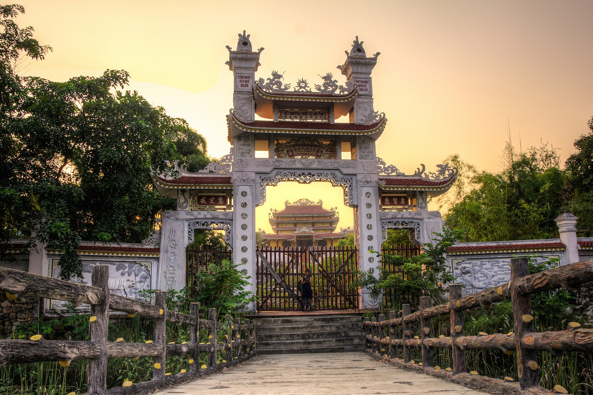

The 10 Most Beautiful Cities/Towns In Nepal :
After the devastating 7.8 magnitude earthquake hit in 2015, much of Nepal was reduced to rubble, and the death toll reached around 10,000. Although so much history was lost as temples and beloved buildings fell, the country is still full of a vibrant culture as it rebuilds. It is famous for holding the highest peak in the world within its borders, but where else should you visit on a trip to Nepal? Here are the 10 most beautiful towns in the country.
KATHMANDU
Colorful Kathmandu is a must-see on any trip to Nepal. The capital city is a hugely popular tourist destination, despite huge amounts of damage from the 2015 earthquake, and for good reason. There are so many sights to see within the city, including the Buddhist temple Swayambhunath, the remains of the Hanuman Dhoka, and Golden Temple (or Kwa Bahal), a Buddhist monastery. The sometimes chaotic city is full of smells, sounds, and people, and the streets are always packed with rickshaws and slow-moving traffic. Kathmandu is a fun place to spend a few dizzyingly wonderful days.
LUMBINI
Lumbini is one of the most historically important towns in Nepal, as it is home to the birthplace of Siddhartha Gautama, the Buddha, in 563 BC, as well as some of the country’s most important archeological finds that date back to the third century BC. You can visit Lumbini’s peaceful monasteries in the wooded park or spend time relaxing in the gardens. Interestingly, the area around Lumbini is predominantly Muslim, but the city is an important place for Buddhist pilgrims from around the world. A newly designed religious park is a long-time work in progress meant to revitalize the often-forgotten city. You could spend a few hours exploring the small area of Lumbini or you could spend days basking in the city’s peaceful vibes.
POKHARA
Pokhara was one of the few towns that was virtually untouched by the 2015 earthquake. Situated on the shoreline of a peaceful Lake Phewa, the city is embedded with beautiful natural scenery, like the dramatic, snow-capped Annapurna Massif and the surrounding mountain range. Pokhara is known as a popular site for adventure sports like paragliding and other fun activities like paddle boating on the calm lake water.
BHAKTAPUR
Bhaktapur, which was historically described as the best-preserved city-state in the Kathmandu Valley, was tragically devastated in the 2015 earthquake. Many traditional buildings were completely destroyed or damaged beyond repair. Although the streets are still damaged and covered in rubble in some areas, a lot of the town’s historic and religious monuments are still towering over the three bustling squares. This city is more pedestrian-friendly than Kathmandu or Patan, and here you’ll find artisans weaving cloth and laying pots to dry in the sun.
CHITWAN
Chitwan is home to one of Nepal’s most-visited sites, Chitwan National Park. The park is relatively simple and cheap to visit, and was hardly damaged in the earthquake. The 932 square kilometers of parkland is filled with forests, marshes, grasslands, and wildlife like rhinos and monkeys. It is listed as a UNESCO World Heritage site and is recognized as one of the best parks to see Nepal’s local wildlife. Watch for some of the 544 species of birds as well as rare animals like leopards, wild elephants, sloth bears, and the rarest creature of all: the Bengal tiger. In 2013, there were just around 120 adult tigers in the park. You can stay in one of the luxury lodges in the village of Sauraha, but if you want to avoid tourist crowds, try Ghatgain or Meghauli.
NUWAKOT
This small town, which used to be the capital of Nepal, is an idyllic, relaxing getaway, but it also was badly damaged in the recent earthquake. Historic temples and monuments were damaged—some, like the Garad Ghar, beyond repair—and many houses completely collapsed. The town is recovering, however, and there are still a good number of sights to see, as well as panoramic views from the new viewpoint tower at the Kalika Temple or the hilltop Malika Temple. Visit the historic Durbar Square with its seven-story fortress from the 1700s, Saat Tale Durbar
PANAUTI
Located in a side valley off the Arniko Highway at the sacred confluence of the Roshi Khola and Pungamati Khola rivers, as well as a third “invisible river,” Panauti is uniquely resistant to earthquake damage. Visitors mostly come to Panauti during the daytime, so early or late in the day is the best time to explore the city for a magical experience. The city is dotted with ancient, ornate temples and restored Rana-era mansions.
PATAN
Now practically a suburb of Kathmandu, Patan was once an independent city-state. Visit Durbar Square, where extraordinary temples and palaces line the streets. Make sure to stop by town’s great collection of Fair Trade shops, which sell wonderfully hand-crafted goods and whose proceeds go to those who need it most. The busy city is often full of day-trippers, and it becomes quiet at night when the tourists return to Kathmandu and other nearby locations.
JANAKPUR
Janakpur is the birthplace of the goddess Sita and the place where she married the god Ram (Vishnu in mortal form). The city’s central temple, Janaki Mandir, is a guaranteed stop on any Hindu pilgrimage tour, though few tourists visit the area. One of the only other attractions in the city is the site of Nepal’s only railway and railhead. Located very near the Indian border, the small, holy city has a strong Indian influence.
ILLAM
Ilam is Nepal’s tea district because of its perfect tea-growing conditions—cool and moist air for most of the year—and the country’s first tea estate was established here in 1864. Tea gardens cover the ridge above the town and drop down along the steep far side of the mountain. Watch the pickers work between April and November, or just come to Ilam to taste the tea, take some hikes in the mountains, or go birdwatching.